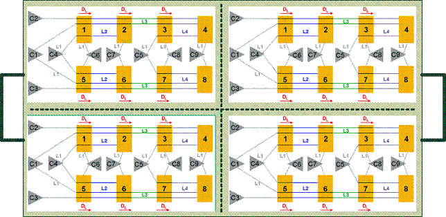

Identifying sites
To provide easy identification of a specific site with any supported sharing topology, topologies are normalized for driver sharing and sites are numbered according to their position in this normalized topology.
Sites are identified with x, y, and z coordinates:
- The x-coordinate is the order of sites in a daisy chain: The site closest to the drive pin is site 0, the next site is site 1, and so on.
- The y-coordinate distinguishes the individual daisy chains in a y topology. The order in which the daisy chains connected to the same pin are numbered is not important.
- The z-coordinate describes the position of the domain on the load board. The order in which the domains are numbered is not important.
Example
Consider this load board, with four identical domains:

The superstructure from this load board has the x,y,z values of 4,2,4:
- x=4, the least common multiple of 1, 2, and 4 (the lengths of the daisy chains for the various driver pins)
- y=2, the least common multiple of 1 and two (the number of daisy chains that are connected to the same driver pin in a y structure)
- z=4, the number of domains on the load board
Functional changes
- Introduced in MTP 3.0.1